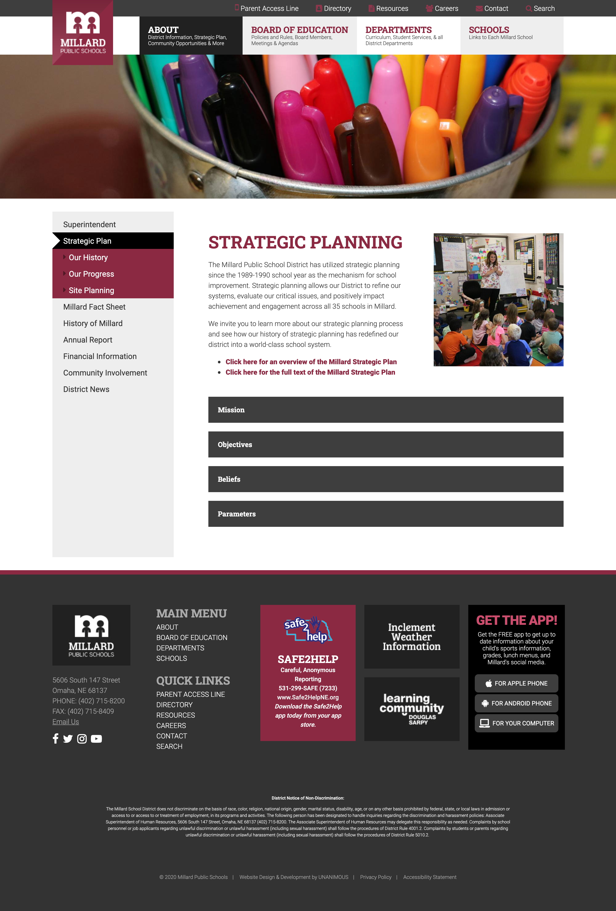

Featured Work: Millard Public Schools
- Drupal 8
- PHP
- Twig
- Less
- jQuery
- Gulp
- Git
- ADA compliancy tested
- Link to Website
Millard Public Schools needed a fresh new set of websites for their district site and 35 high school, middle school, and elementary sites. Video banners, resource browsers, and auto-importing staff directories are some of the unique features that were implemented into the sites. Each school site mirrored the district site layout, but came with their own content and color scheme.

- 